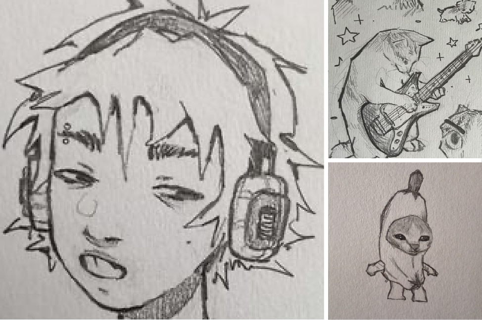

Skip to content
Home
Create
Recent searches
jazz color palette
jazz color palette
jazz color palette
Ideas for you
Wallpapers
Illustrations
Chain jewelry
Tyler the Creator
Diy canvas
Piercing
Swag cartoon
Sneakers
Profile
Username
Usertag
1 following
Share
Edit profile
Created
Saved
All Pins
35 Pins
1mo
Collage
2 Pins
1mo
Board suggestions
Grafitti drawing
10 pins
Cute cats
10 pins
Men hairstyles
7 pins

Sketches
7 pins
Graphic poster
5 pins
Unorganized ideas
Organize
TeePublic
Profile
Save
D3Nim
Profile
Save
PosterClub
Profile
Save
Hyperr!
Profile
Save
Digital posters
sponsored
Profile
Save
X
Profile
Save
D0rk
CleanLogos
Nm 5
Nothing to show...yet! Pins you create will live here.
Create Pin
 Illustrations
Illustrations
 Chain jewelry
Chain jewelry
 Piercing
Piercing


 TeePublic
TeePublic


 D3Nim
D3Nim


 Hyperr!
Hyperr!


 X
X
 D0rk
D0rk

 CleanLogos
CleanLogos

 Nm 5
Nm 5